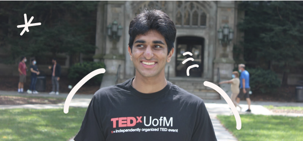
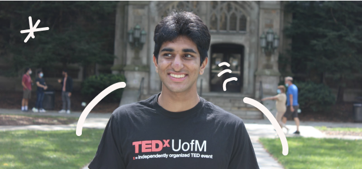

Sorry Thank You!
🎓 UX Research & Design @ UMich
🚗 Former UX Research Intern at Uber
💖 Friendships, Frameworks, and Jams
Hey I'm Rohan, I'm a design technologist and qualitative user researcher that enjoys experimenting in the 0-to-1, concept-to-launch phase of product development. One sticky note at a time, I’ve had the privilege to learn new methodologies through investigating my own passions, like sports, music, and productivity platforms.
From this experience, I take pride in the moments where I've stumbled across real-life insights, from making recommendations for a video game to discovering the potential of a social betting platform. In 2023, I'm excited to continue practicing these skills as I look out for product design and user research opportunities.
I really appreciate you stopping by! If you'd like to learn more about me outside of research, scroll down below. Lastly, I’m addicted to coffee, so please do contact me any time!
ROHAN
Words of wisdom that resonate with me
What I bring to a team
Friendships 👋
A true Campaigner at heart, I am an aspiring friend to all, and I hope to make the people around me feel happy and comfortable. This innate desire helps empower my peers to open up and share their true, passionate feelings, whether it be a teammate or research participant.
Frameworks 🎨
In standup comedy, each comedian develops their own artistic way of getting a laugh out of an audience. Similarly, in UX Research, frameworks and methodologies inspire new, artistic ways for researchers to empathize with users. Personally, learning these frameworks has opened me up to the powerful, creative world of research craft.
Jams 🚀
The sticky note is my favorite medium of art, as I love to use my creativity and inspire new ideas. Pairing creativity with my positive energy, I believe I can help bring fun to team ideation sessions, as well as an excitement as teams transition from the problem space to the solution space.
Out of Office

TED Talks
Watching TED talks is my favorite, most scholarly hobby. In high school, I did a TED talk of my own, just so I could get a cool picture next to the red TED blocks. This love carried into college, where I joined TEDxUofM. Come Sophomore year, I directed the 2021 TEDxUofM Conference. From this conference, I'm most proud of the discussions that lived on; above, you can see a picture from Nic Glynos's TEDxUofM talk, which has prompted more than 2000 comments on YouTube.
Hockey
Growing up, hockey was my identity, and today, it more-or-less still is. Playing hockey has taught me so much about life, and into my high school years, it helped me question a lot about my identity. Looking back, I wouldn't trade the hockey community for the world, and I'm so thankful for the memories that came with it. In 2019, I was named to the Michigan High School Hockey All State Class; this is an award that means a lot to me, through all of the ups and downs with the sport.
The Symbol of the Shadow
The symbol I hold closest with me is Carl Jung's symbol of the shadow, which I first came across when reading Kafka on the Shore. In its core, the symbol prompts you to break everything down in order to find meaning and build back up; if you don't face these fears, the shadow will only grow darker and haunt you further. In life, I have personally related to this concept in many different experiences and disciplines. One practice that relates closely to this concept is fear-setting.
Vision for the next 5 years
If I could be one superhero, I'd be Sean Evans in Hot Ones. In the next 5 years, I'd love to learn how he manages to provide ample background to a question, while still leaving it open-ended for his guests to answer.
I admire the work of design engineers, as they're so creative & talented in their use of design & code. One day, I'd love to learn and practice these skills, so that I can create solutions for the design world altogether.
Favorite Slack Reactions
No need for an explanation. The party parrot is love at first sight.
An homage to where I first found love for Slack: my tech frat.
Always happy to meet new people and make new friends.
How I like to give thanks for a shoutout!
My favorite way to say thank you, in-person or virtually.
I love to cheer on my teammates!
A stylish way to add some love to a message.
Coining this emoji as the official UXR symbol!